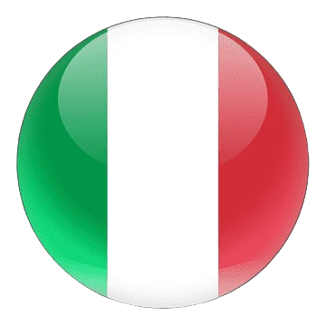
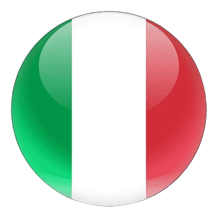

Itália e Medjugorje
Uma jornada de fé e cultura por Roma, San Giovanni Rotondo, Medjugorje e Assis. Explore locais sagrados, participe de atividades religiosas e vivencie momentos únicos de espiritualidade em meio à rica história e paisagens deslumbrantes da Itália e Bósnia-Herzegovina.
Dia 1 – Roma
Chegada a Roma e traslado para uma visita panorâmica da cidade. Acomodação no hotel, jantar e pernoite.
Dia 2 – Roma Cristã
Após o café da manhã, ida ao Consulado da Bósnia para solicitação do visto. À tarde, visita à Roma Cristã, incluindo a Basílica de São Pedro (túmulo do Papa João Paulo II), Basílica de Santa Maria Maior, Basílica de São João de Latrão, Escada Santa, Coliseu (visita externa), Arco de Constantino e Foro Romano. Jantar e pernoite no hotel.
Dia 3 – Roma / San Giovanni Rotondo
Após o café da manhã, retorno ao Consulado da Bósnia para retirada do visto. Tempo livre. À tarde, viagem para San Giovanni Rotondo. Visita ao Santuário de São Pio da Pietrelcina. Acomodação no hotel, jantar e pernoite..
Dia 4 – San Giovanni Rotondo / Lanciano / Ancona / Split (noite a bordo)
Café da manhã e saída para Lanciano. Visita ao Santuário do Milagre Eucarístico e participação na Santa Missa. À tarde, viagem até Ancona para embarque no navio com destino a Split. Jantar e pernoite a bordo.
Dia 5 – Split / Medjugorje
Café da manhã a bordo. Parada no Santuário de Nossa Senhora de Lourdes, com possibilidade de celebrar uma Missa. Prosseguimento até Medjugorje, chegada e tempo livre. Jantar e pernoite.
"Dia 6 – Medjugorje
Café da manhã. Participação nas atividades religiosas do santuário, com possibilidade de encontro com videntes e frades franciscanos. Santa Missa. Jantar e pernoite.
Dia 7 – Medjugorje
Café da manhã. Continuação do programa da paróquia, com atividades espirituais e tempo para oração pessoal. Santa Missa. Jantar e pernoite.
Dia 8 – Medjugorje
Café da manhã. Dia dedicado a mais atividades religiosas, visita a locais sagrados e tempo para reflexão. Santa Missa. Jantar e pernoite.
Dia 9 – Medjugorje
Café da manhã. Último dia de atividades religiosas no santuário, seguindo o programa local. Santa Missa. Jantar e pernoite.
Dia 10 – Medjugorje / Split (noite a bordo)
Café da manhã. Saída em direção a Split, visita guiada pela cidade e tempo livre. No final da tarde, embarque no navio para Ancona. Jantar e pernoite a bordo.
Dia 11 – Ancona / Assis / Roma
Café da manhã a bordo. Viagem para Assis, com visita à Basílica de Santa Clara, Basílica de São Francisco, centro histórico e Basílica de Santa Maria dos Anjos (Porciúncula). Continuação até Roma, acomodação no hotel, jantar e pernoite.
Dia 12 – Roma / Brasil
Café da manhã. Traslado ao aeroporto de Roma Fiumicino para embarque com destino ao Brasil.